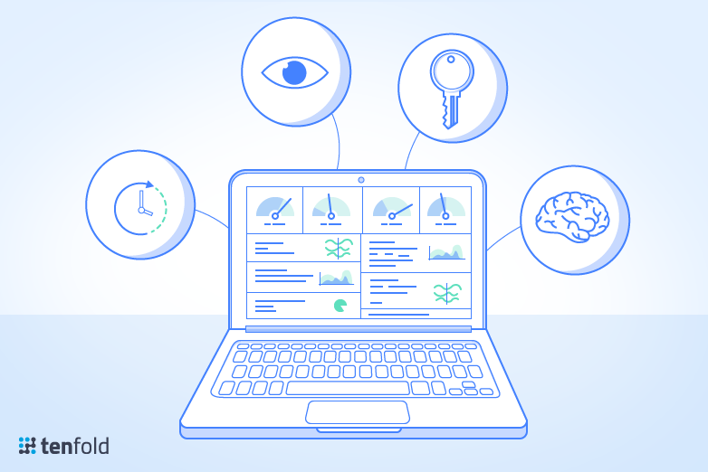

The Organizational KPIs pertain the IT Department’s metrics such as Financial Performance (e.g. being in line with the budget) while the Operational KPIs address Service topics (e.g. IT Systems availability).
Let’s now list some of the main KPIs according to herein established groups and provide a short explanation about each:
Operational KPIs
System availability (including Systems and network)
– The majority of the systems that run at any corporate network as well as the network itself do so to support the Core Business. Therefore, it is of the utmost importance that those are available 100% of the required time.
Downtime
– Although it may seem redundant when considering the previous KPI, in fact the downtime metric by itself it is relevant towards assessing the overall IT Landscape behavior whereas the System Availability applies to each individual system independently.
Average queue time of incoming phone calls
– The end user is a key element in the corporate world and having someone waiting on the phone to be supported by Service Desk is a major waste of productivity, hence the relevance of this KPI.
Lost calls
– A complimentary KPI to the previous one pertains the number of lost calls to the Service Desk for it shows how many users, although in need of support, decided to abandon the call since it was taking too long (under their perception) to get an answer.
Service desk client satisfaction index
– This is one of the main KPIs to assess how the company is happy with the performance of the IT Department in its main role of supporting the business.
Ticket handling time
– This mirrors and efficiency metric, therefore enabling (when a comparative analysis is performed over time) to understand if the service is improving or the opposite.
Adherence to Response time
– Each system is classified according to the severity and extent of damage towards the Core Business that a severe incident in that same system is likely to represent. That leads to the establishment of required Response Times to mitigate such potential impact.
Adherence to Resolution time
– Known systems have service support patterns defined over time, which allows to establish an average time that is acceptable to perform a corrective action, and therefore the definition of Resolution Time. Let there be noticed that this is a very “delicate” KPI for in most cases critical incidents imply having the software manufacturer involved, since they are the ones with access to the code.
Service Reposition time
– It is most common to have this KPI defined instead of the one above for it implies having the system running although the incident route cause may still be unknown.
Backup and restore success rate
– One of the main business resilience aspects of any Company pertains the ability to safe keep vital data and have it restored in case of major loss. This KPIs is in fact a combination of two the Successful Backups rate and the Successful Restore Operations rate that measure up to which extent regular backups run successfully in one case, and up to which extent restore procedures also run successfully.
Service desk tier 1 resolution rate
– This KPI mirrors a key metric for any operation which pertains the ability to continuously improve the rendered service. So once a system comes into place it is normal to have most of the incidents escalated to the 2nd or 3rd level support teams, but as time goes by, the knowledge of how to handle incidents and event needs to be documented into simple procedures so that at a given point in time (usually within a year of its deployment), the majority of incidents is solved by the Service Desk with no need for escalation to expert teams.
Adherence to SLA
– When resorting to 3rd party providers, an IT Services Support Contract is set in place between the corporate client and such provider company. The Services to be rendered are regulated by Service Level Agreements (SLAs), that basically define WHAT, HOW, WHEN, HOW MUCH, resorting to WHICH tools and assets, is being supported and measured according to which KPIs. A “must have” KPI is exactly this one which demonstrates how the provider is adhering to the overall SLA’ terms.
Change driven Incidents rate
– Like someone once said, “the only constant in life changes”. As live entities both the Corporation (driven by market trends and events) and its IT landscape are subject to changes. Now it is relevant that a change does not impact in a new incident, so it is relevant to measure how many changes lead to incidents.
Problems resolution rate
– One of the most difficult things within a continued service rendering towards a wide IT Landscape pertains identifying, dealing with and fixing Problems. Now, a Problem here means a recurrent miss behavior on a given system or systems that occurs repeatedly out of distinct incidents.
Deployment success rate
– Some regular changes within any IT landscape concern patching, versions update and adherence to configuration standards. These are considered under deployment and they may have each a specific KPI per cluster of systems or even system or a global one, depending on the established corporate IT Policy.
Security compliance rate
– Security is another major pillar of any IT Landscape and this KPI aims at assessing up to which extent such landscape is compliant with established IT Security Policies. Again the option may lay in one overall KPI or up to individual KPIs by system, depending on the approach and criticality degree at hand.
Shadow IT percentage
– A major factor towards raising the security and compliance risks within an IT Landscape in the proliferation or existence of unauthorized non-sanctioned IT resources. These can range from a simple unprotected access to a public cloud based storage service where to some user sends internal company documents up to the installation of a server under someone’s desk which is connected to the network via a local shunt through his/ her desktop. The percentage of these forms of IT resources within the entire Corporate IT Landscape is a strong indicator of security vulnerabilities.
Preventive Maintenance backlog
– One main factor that assures operational status (meaning lowering the disruption potential) its related with the accurate and timely performance of Preventive Maintenance Actions (a simple example would be cleaning database logs). This also accounts for the overall assessment of Business Continuity and IT Resilience potential of a given organization.
Percentage of systems covered by antivirus/anti-spyware software
– Although it may seem logical that all systems need to have installed and running the latest version of such software, that is not the status quo in many companies. The way to move in the full compliance direction can only be undergone if there is a way to identify where the company stands “on the map” at a given point in time, hence the relevance of this KPI.